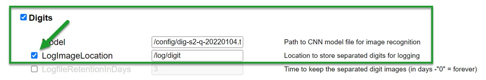

Collect images to improve the models
If your device has new, different digits or pointers it might be that the existing models don't recognize them well. In such case you can collect your images and so we can train the model better. This helps you and also others as the models get more accurate. Adding more images also helps if you have a model that is already known, but the neural models do not produce good results.
Experienced users can do the training also by themselves, see Learn a model with your own images.
Before you start
Before you go ahead, please check if your digits/pointers are not yet contained in the training data. A visual overview is available at digits resp. pointers.
Poor recognition is often caused by blurred images, low contrast or incorrect setting of the ROIs. Therefore, check these possibilities first, as additional training will bring little improvement here. See ROI Configuration for details.
Collecting images
The neural network is trained based on a set of images that have already been collected over time. If your digits are included or at least very similar to included images, the chance is very high that the neural network is working fine for you as well.
The neural network configuration is stored in the TensorFlow Lite format as *.tfl or *.tflite in the /config directory on the SD card. A model can be updated (or a new one added) by uploading the new file and activating it on the configuration page or in the config file /config/config.ini.
In order to incorporate new digits a training set of images is required. The training images needs to be collected in the final setup with the help of the Digits or Analog log settings (not to be confused with the Data or Debug log). Enable the logging of the images on the configuration page or in the config file /config/config.ini:

Now be patient! You have to wait until it has collected an image of each digit of every type. They wil lbe placed on the SD card in the folder /log/digit/ resp. /log/analog/.
After some days, there will be a lot of images, many of them very similar. Because of this, it is important to select only a subset of them for the model training.
The tools shown below can help you with that.
Collecting images for dig-class100/dig-cont/ana-class100
For digits use Collectmeterdigits resp. for pointers use collectmeteranalog to fetch the images from the device and select a subset of them. Please read the detailed instructions on the mentioned links for details!
If the fetching of the images is too slow for you, a faster way to get the images to your PC is to remove the SD-card from the ESP32 module and insert it into the card reader of yur PC. Then search for two..three images of each digit (not more! :-)). You will have to make sure to label the images yourself matching the effective value they are supposed to show.
Share your images
In most cases we will integrate your images in the training dataset of the models. Only if we fear a degradation of the models or you need a different behavior, we might not include the data in the standard models (see at bottom of page for reasons).
To provide your images to us for training the model, open an Github Issue and append the zipped images ito it.
Images can be rejected if
- You provide too many images. More than 1000 images of your device are really to much.
- Images which are not good enough (see ROI Configuration) will be rejected. It would reduce the accuracy of the networks.
- Images with too little focus will be rejected.
- Images with too much blur are rejected.
Our models are to small to recognize everything in any quality. So we use only images of medium or good quality.